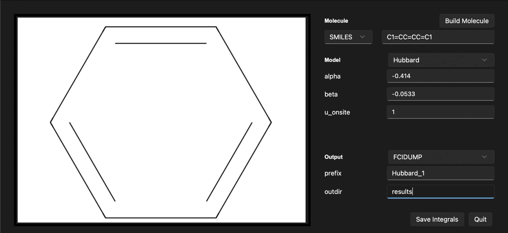

Tutorial: Graphical User Interface (GUI) with ModelHamiltonian#
In this tutorial, we will learn how to use the GUI of the ModelHamiltonian package. The GUI is a graphical interface that allows you to interact with the package without having to write any code. First, we have to install the gui-subversion of package. To do this, we will use the following command:
git clone https://github.com/theochem/ModelHamiltonian.git
cd ModelHamiltonian
python3 -m pip install -e .[gui]
Once the installation is complete, we can run the GUI by executing the following command:
python3 -m moha/gui/moha_gui.py
The window shown below will appear:

This window has three main sections: the input section, the output section, and the control section. The input section is where you can input the parameters of the calculation. The output section is where the results of the calculation will be displayed. The control section is where you can start the calculation and save the results.
In the input section Molecule, you can define the system with:
MOLFILE: The path to the molfile of the molecule.
SMILES: The SMILES representation of the molecule.
In the control section Model, you can choose a model. Available options are:
PPP: Pariser-Parr-Pople model.Hubbard: Hubbard model.Huckel: Huckel model.Heisenberg: XXZ Heisenberg model.Ising: Ising model.RG: Richardson-Gaudin model.
In the output section, you can save the results of the calculation by clicking the Save button.
Output file formats are:
FCIDUMP: The FCIDUMP file format is a standard file format for storing the Hamiltonian matrix of a quantum chemistry calculation.npz: The npz file format is a standard file format for storing the Hamiltonian matrix of a quantum chemistry calculation.
Results will be saved in the outdir directory under the name prefix.
Example: Hubbard model from a SMILES string#
In this example, we will calculate the Hubbard model of a molecule using the SMILES string. We will use the SMILES string C1=CC=CC=C1 to define the molecule. We will set the parameters of the Hubbard model as follows:
U = 1.0 Hartree
\(\alpha\) = -0.414 Hartree
\(\beta\) = -0.0533 Hartree
To do this, we will follow these steps:
In the
Moleculesection, set theSMILESfield toC1=CC=CC=C1.In the
Modelsection, select theHubbardmodel.In the
Hubbardsection, set theUfield to1.0, thealphafield to-0.414, and thebetafield to-0.0533.Click the
Build Moleculebutton to build the molecule.
After following these steps, the output section will display the built system. You should see the following output:

Now, let’s save ouput in the FCIDUMP format under a file name hubbard_1.fcidump. We can choose the output directory to be results.
To do this, we will follow these steps:
In the
Outputsection, set theFormatfield toFCIDUMP.In the prefix field, set the prefix to
Hubbard_1. Note that prefix isn’t case sensitive. File name will behubbard_1.fcidump.In the outdir field, set the outdir to
results.
After following these steps, the output section will display the build system. You should see the following output: 
To save the results, click the Save integrals button. The results will be saved in the results directory under the name hubbard_1.fcidump.
In order to quit the GUI, click the Quit button.
Example: Ising model from a MOLFILE#
In this example, we will calculate the XXZ Heisenberg model of a molecule using the MOLFILE. We will use the MOLFILE examples/mol/Fe8S7.mol to define a system. This system has been used in the paper to study simulations of challenging correlated molecules and materials on the Sycamore quantum processor. We will set the parameters of the Ising model as follows:
\(J_{ax}\) = 1.0 Hartree
\(\mu\) = -1.0 Hartree
NOTE: Connectivity information from the MOLFILE is taked from the symbolic bonds in the MOLFILE.
To do this, we will follow these steps:
In the
Moleculesection, set theMOFILEfield toexamples/mol/Fe8S7.mol.In the
Modelsection, select theIsingmodel.In the
Isingsection, set theJ_axfield to1.0, and themufield to-1.0.Click the
Build Moleculebutton to build the molecule.
After following these steps, the output section will display the built system. You should see the following output:

Now, let’s save ouput in the npz format under a file name ising_1.npz. We can choose the output directory to be results.
To do this, we will follow these steps:
In the
Outputsection, set theFormatfield tonpz.In the prefix field, set the prefix to
Ising_1. Note that prefix isn’t case sensitive. File name will beising_1.npz.In the outdir field, set the outdir to
results.
After following these steps, the output section will display the build system. You should see the following output:

To save the results, click the Save integrals button. The results will be saved in the results directory under the name ising_1.npz.
In order to quit the GUI, click the Quit button.